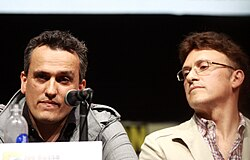
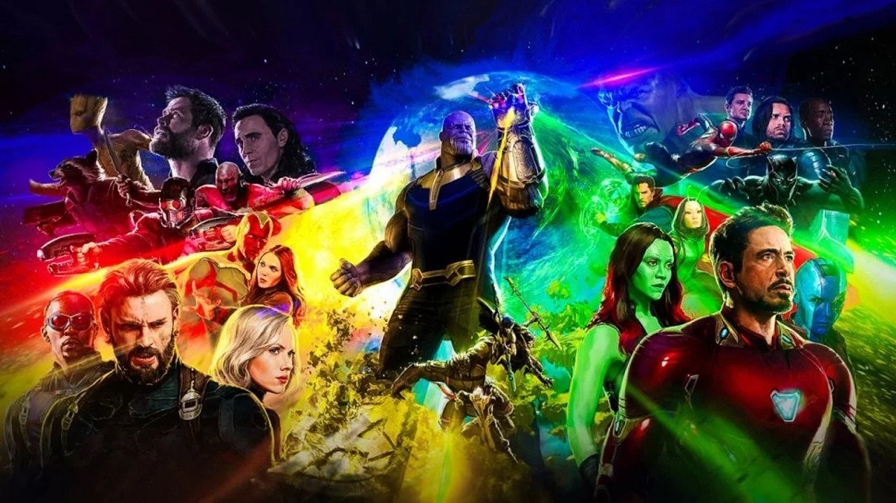
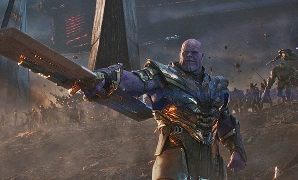
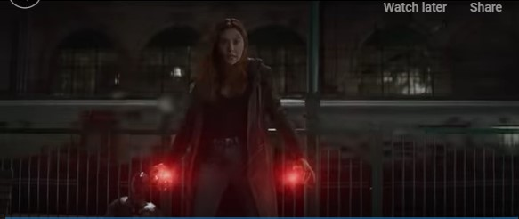
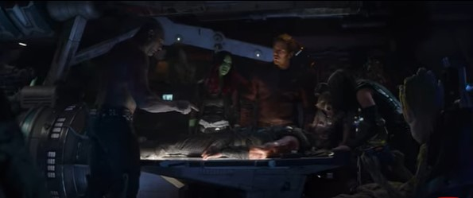

Hello, World!
part 1
Xin chào mọi người mình là Kiệt đây
mình 15 tuổi.
sở thích của mình
- chơi game điện thoại:
- liên quân
- honkai impact
- đọc sách và xem phim
- truyện Artemis Fowl
- phim ready player one
- Eternals
mình thích chơi game và làm web.
Mình làm code được 2 năm
bảng FAQ
| Question | Answer |
|---|---|
| trường đang học | THCS Lê Anh Xuân |
| game từng làm ra được | Flappy Bird,snake,tictactoe |
PART 2
3 bộ phim mình thích là
Star wars 7,avengers infinity war,spider man:no way home
1)tóm tắt bộ phim spider man no way home:
wikipediađạo diễn:Sam Raimi
- PHẦN 1
- PHẦN 2
- PHẦN 3
- 3.1 :cái chết của dì May
- 3.2 :Ned tập hợp 2 spider man từ chiều không gian khác
- PHẦN 4
- 4.1 :các spider man chữa trị cho các ác nhân
- 4.2 :green golbin cướp được câu thần chú đóng hộp
- PHẦN 5
- 5.1 :kí ức về spider man bị xoá đi
- mid-credit
- hồi kết
- giới thiệu nhân vật phim
- Spider man:nhân vật chính của phim
- Ned,MJ: bạn bè của spider man
- DR.Octavious,Green golbin,Max Dillon,Flint Marko : phản diện tới từ chiều không gian khác
- Matt Murdock: thân phận thật của Dare Devil
- Spider Tobey,Spider Andrew:các người nhện tới từ vũ trụ song song
- PHẦN 1
- 1.1 :Thanos tấn công vào con thuyền tị nạn của người dân Asgard
- 1.2 :cảnh báo của Bruce Banner về cuộc tấn công của Thanos
- 1.3 :Black-order tấn công thành phố New York
- PHẦN 2
- 2.1 :Black-order phục kích Vanda và Vision hòng cướp mind stone
- 2.2 :nhóm của Roger bắt đầu tập hợp
- PHẦN 3
- 3.1 :Thor được tìm thấy bởi vệ binh dải ngân hà
- 3.2 :kế hoạch của Thor
- PHẦN 4
- 4.1 :cuộc gặp với Ei-tri tộc trưởng tộc người lùn
- 4.2 :rèn Storm breaker
- PHẦN 5
- 5.1 :Thanos lấy được viên đá linh hồn
- 5.2 :cuộc chiến tại hành tinh Titan
- PHẦN 6
- 6.1 :cuộc chiến tại wakanda
- 6.2 :Thor tham chiến
- PHẦN 7
- 7.1 :Thanos lấy được viên đá trí tuệ
- 7.2 :cú búng tay của Thanos và thất bại của Avenger
- hồi kết
- post credit
- Thor,Spider man,Iron man,dr Strange,Wanda ,Hawk Eye,Black Widow,đội vệ binh dải ngân hà nhân vật chính của phim
- Ebony Maw, Cull Obsidian, Proxima Midnight và Corvus Glaive con nuôi của Thanos
- Thanos phản diện chính của phim
- PHẦN 7
- 1.1 : Mở đầu cho cuộc hành trình đi tìm jedi cuối cùng
- 1.2 : Hành trình của Rey, Finn(cựu Stormtrooper đào ngũ) và Poe Dameron
- 1.3 : Kết thúc PHẦN 7
- Rey,Poe Dameronnhân vật chính của phim
- Finncựu storm troper đào ngũ
- Luke Skywalker.Jedi cuối cùng
PHẦN 1.1
Sau khi Quentin Beck-Mysterio đăng đoạn video nói về Người Nhện khiến người dân toàn thế giới hiểu nhầm Người Nhện sát hại hắn và tiết lộ danh tính thật của cậu là Peter Parker

dì của Peter là May, MJ và Ned Leeds bị thẩm vấn, nhưng mọi cáo buộc đều được bãi bỏ với sự giúp đỡ của luật sư Matt Murdock. Parker, MJ và Ned nộp đơn vào MIT, nhưng đơn đăng ký bị từ chối do mối quan hệ của MJ và Ned với Người Nhện.
phần 1.2 Parker đến thăm Sanctum Sanctorum để nhờ phù thủy tối thượng, Stephen Strange giúp đỡ, và Strange gợi ý một cổ thuật có thể khiến mọi người quên đi Peter Parker là Người Nhện.

Tuy nhiên, trong khi Strange sử dụng câu thần chú, Peter liên tục yêu cầu thay đổi, khiến nó trở nên bị lỗi và khiến cho những người biết đến thân phận thật của Người Nhện ở những vũ trụ khác bị kéo đến dòng thời gian chính của vũ trụ MCU.
PHẦN 2.1 Peter đến cầu Alexander Hamilton để thuyết phục một quản trị viên MIT chấp nhận đơn đăng ký của Ned và MJ, nhưng cây cầu bất ngờ bị tấn công bởi Tiến sỹ Otto Octavius. Peter, mặc bộ đồ Iron Spider, chiến đấu với Octavius tại cây cầu trong khi cố gắng cứu quản trị viên này.

Khi Octavius xé toạc Peter khỏi bộ đồ Iron Spider, nó bắt đầu liên kết với các xúc tu cơ học của hắn và cho phép Parker vô hiệu hóa các xúc tu. Sau đó, họ nhận thấy Green Goblin, Norman Osborn, đang bay về phía họ, nhưng trước khi hắn có thể tấn công hai người, Strange đã bắt Octavius và đưa ông ta vào một phòng giam ở Sanctum, cùng với Curt Connors / Lizard. Strange giải thích rằng câu thần chú đã triệu hồi mọi người biết thân phận thật của Người Nhện từ mọi nơi của đa vũ trụ. Strange ra lệnh cho Peter, với sự giúp đỡ của MJ và Ned, tìm và bắt những kẻ còn lại.Peter xác định vị trí của Max Dillon và Flint Marko trong một khu rừng


PHẦN 3 Trong khi đó, Norman Osborn, sau khi giành lại quyền kiểm soát bản thân đối với nhân cách Green Goblin bị chia cắt của mình, trở thành một nhân viên của F.E.A.S.T. rồi được May xử lý trước khi Peter tìm thấy ông ta. Strange giam giữ Osborn với những kẻ khác, sau đó chuẩn bị một câu thần chú chứa trong một chiếc hộp sẽ đưa những tên phản diện trở lại vũ trụ. Peter lập luận rằng trước tiên bọn họ nên được chữa khỏi các năng lực bất thường và chứng mất trí của mình, từ đó hy vọng rằng làm như vậy sẽ ngăn chặn cái chết của họ khi trở về. Peter đánh cắp câu thần chú được đóng hộp, và sau một cuộc chiến ngắn ngủi trong Không gian Kính, Strange đã bị bẫy ở đấy trong 12 giờ. Trong khi phát triển các phương pháp chữa trị cho Dillon và Osborn, nhân cách Goblin nắm quyền kiểm soát Osborn và thuyết phục những kẻ phản diện chống lại Peter. Dillon, Marko và Connors trốn thoát còn Osborn phá hủy căn hộ trước khi giết dì May.

Ned học cách mở cổng không gian bằng cách sử dụng nhẫn kép của Strange, cậu và MJ sử dụng nó để cố gắng xác định vị trí của Parker. Thay vào đó, họ vô tình tìm thấy hai phiên bản khác của Parker cũng được triệu hồi bởi phép thuật của Strange, được gọi là "Peter-Two" do Tobey Maguire đóng và "Peter-Three" do Andrew Grafield đóng. Ned và MJ tìm Peter và an ủi cậu, trong khi những Người Nhện khác chia sẻ câu chuyện riêng của họ về việc mất đi những người thân yêu và an ủi cậu chiến đấu vì danh dự của dì May.
PHẦN 5.1 Các Người Nhện phát triển những phương pháp chữa trị cho những kẻ phản diện còn lại và dụ Dillon, Marko và Connors đến Tượng Nữ thần Tự do. Peter-Two chữa cho Marko và Peter-One chữa cho Connors. Octavius đến để hỗ trợ và chữa trị cho Dillon. Ned giải thoát Strange khỏi Không gian Kính, nhưng Norman Osborn đến và phá hủy câu thần chú đóng hộp, khiến hàng rào ngăn cách các vũ trụ bị phá vỡ. Trong khi Strange cố gắng duy trì kết giới, Peter suýt giết Norman trong cơn tức giận trước khi Peter-Two thuyết phục cậu ngừng lại. Peter-Three và Peter-One sau đó tiêm thuốc giải cho Norman, khôi phục lại sự tỉnh táo cho ông ta. Peter, nhận ra rằng cách duy nhất để bảo vệ kết giới của đa vũ trụ là xóa cậu ta khỏi trí nhớ của mọi người rồi hứa với MJ và Ned rằng cậu sẽ tìm lại họ. Peter và MJ sau đó ôm hôn nhau. Phép thuật đã được thực hiện, đưa 2 Người Nhện cùng dàn phản diện trở lại vũ trụ của họ và xóa sạch tất cả ký ức về Peter khỏi tâm trí mọi người (bao gồm cả Strange) trong vũ trụ MCU. Dẫu vậy ký ức về Người Nhện có tồn tại vẫn được giữ lại.
>Hai tuần sau, Peter đấu tranh để làm quen lại với MJ và Ned, nhưng sau khi thấy rằng họ đã được nhận vào MIT, cậu thấy mình không thể làm vậy. Trong lúc thăm mộ của dì May, cậu có một cuộc trò chuyện ngắn ngủi với một Happy Hogan mà không hề quen biết cậu.
>Bộ phim kết thúc với phân cảnh Peter ngồi cô đơn một mình trong một căn hộ chung cư mới, bên chiếc máy khâu phủ đầy vải vụn. Khi bất chợt bắt được tiếng radio nội bộ của cảnh sát New York, trên chiếc điện thoại cài phần mềm bắt sóng tự chế, Peter liền mặc ngay bộ đồ Người Nhện mới may và lao ra ngoài cửa sổ. Dưới trời tuyết trắng tối nay, Người Nhện có một nhiệm vụ.
Trong một cảnh mid-credit, Eddie Brock bị đưa đến dòng thời gian của MCU và Venom của anh ta quyết định tìm Người Nhện, nhưng đột nhiên bị quay trở lại vũ trụ của họ do phép thuật của Strange, vô tình để lại một phần của symbiote.
2)tóm tắt bộ phim avengers infinity war:
wikipedia đạo diễn:Anh_em_nhà_Russo
 
Movie 2
giới thiệu nhân vật
PHẦN 1
1.1 Sau khi Mad Titan Thanos phá hủy hành tinh Xandar và Quân đoàn Nova, hắn đã có được viên đá Power Stone - Viên đá năng lượng. Thanos tiếp tục cùngcác con nuôi của mình là Ebony Maw, Cull Obsidian, Proxima Midnight và Corvus Glaive tiến hành tấn công Asgardian Statesman - con tàu trở những sư dân tị nạn còn sống sót cuối cùng của Asgard sau đại nạn diệt vong Ragnarok.
Thanos đã sát hại một nửa số người ở trên tàu. Đồng thời cũng tra tấn Thor để buộc Loki giao ra Viên đá Không gian nằm trong khối Tesseract. Chứng kiến cảnh này, Hulk đã cố gắng tìm cách ngăn cản nhưng anh hoàn toàn không phải là đối thủ của Thanos. Heimdall trong những giây phút cuối cùng của mình đã kịp sử dụng sức mạnh của cầu Bifröst đưa Hulk trở về lại Trái Đất để cảnh báo đến mọi người, và Heimdall cũng bị Thanos phát hiện và giết chết.
Về phía Loki, vị thần lừa lọc này lại tiếp tục tận dụng khả năng của mình giả vờ đầu hàng để nắm bắt cơ hội giết Thanos, để rồi cũng phải chịu chung kết cục với Heimdall. Không một ai có thể ngăn cản được Thanos lấy Viên đá Không gian và hắn cũng đã phá hủy con tàu và khiến cho Thor phải trôi dạt ngoài vũ trụ.

Thanos tra tấn Thor để buộc Loki giao ra Viên đá Không gian nằm trong khối Tesseract. 1.2 Nhờ Bifost, Hulk đã đến được trái đất và rơi xuống Thánh đường Sanctum Sanctorum - Nơi Doctor Strange và Wong đang ở tại Thành phố New York và biến thân lại thành Bruce Banner. Anh đã thông báo với Doctor Strange và Wong cùng Tony Stark về toan tính thu thập 6 viên đá vô cực để tiêu diệt sự sống một nửa vũ trụ của Thanos và đội quân của hắn sẽ đến đây để tìm những viên đá còn lại.
1.3 Ngay sau đó, họ đã bị Black Order – mệnh danh là những đứa con của Thanos là Ebony Maw và Cull Obsidian dùng tàu không gian tấn công thành phố New York để chiếm lấy Viên đá Thời gian của Strange. Trong trận chiến này, Spider-man cũng tham chiến bảo vệ New York, trong khi đó Hulk lại không chịu ra mặt dù Banner đã cố gắng năn nỉ

Mặc dù cả nhóm bị vả cho ra bã nhưng Ebony Maw và Cull Obsidian vẫn không lấy được Viên đá Thời gian, bọn chúng đã bắt Doctor Strange lên tàu. Thấy vậy, Tony và Spider-Man cũng tìm cách lẻn lên tàu để cứu vị Pháp sư tối thượng. Trong lúc này Banner cũng cố liên lạc với Steve Rogers, còn Wong thì vẫn ở lại để tiếp quản và bảo vệ Thánh đường.
Tony và Spider-Man cũng tìm cách lẻn lên tàu để cứu vị Pháp sư tối thượng
PHẦN 2
2.1 Ở một diễn biến khác tại Edinburgh, Corvus Glaive và Proxima Midnight thuộc Black Order cũng đã phục kích Vision và Wanda Maximoff để lấy cắp Mind Stone - Viên đá Tâm trí trên trán Vision. Ngay khi Vision bị đâm xuyên người, anh gần như đã mất đi khả năng chiến đấu.
Trong khoảng khắc Wanda bị dồn vào đường cùng, cô chuẩn bị dùng đòn phép quyết tử với bọn họ, thì nhóm người Steve Rogers, Natasha Romanoff (Black Widow) và Sam Wilson (Falcon) bất ngờ xuất hiện đánh trả Corvus và Proxima khiến cho bọn chúng bị thương và buộc phải rút lui. 2.2
Sau trận này nhóm người Rogers đã quay về trụ sở New Avengers và gặp lại được James Rhodes và Bruce Banner. Natasha Romanoff cho biết hiện tại cô không thể liên lạc được với Clint Barton và Scott Lang vì họ đang phải chịu án quản thúc tại gia. Steve Rogers đã đưa ra gợi ý đưa Vision đến vương quốc Wakanda, với công nghệ tối tân có thể họ sẽ giúp tháo được Viên đá Tâm trí ra khỏi trán Vision mà không làm tổn hại đến anh. 
PHẦN 3 3.1
Ngoài vũ trụ, nhóm Vệ binh dải Ngân Hà đã đụng phải con tàu Statesman của Thor đang trôi dạt. Thor dự đoán Thanos chắc chắn sẽ tìm đến Reality Stone - Viên đá Hiện thực được bảo vệ bởi ông Collector ở Knowhere. Vì vậy, họ đã thống nhất chia ra thành hai nhóm:3.2
Nhóm 1 gồm Thor, chồn Rocket và bé cây Groot đi tới hành tinh Nidavellir rèn vũ khí mới có thể giết được Thanos. Nhưng khi tới được hành tinh này, họ mới biết nơi này đã bị bỏ hoang hoàn toàn, chỉ còn duy nhất tộc trưởng tộc ngời Dwarf - Eitri là còn sống sót.

PHẦN 4
Ông đã bị Thanos ép chế tạo bao tay Vô cực sau khi đã tàn sát cả chủng tộc Dwarf. Tuy nhiên ông cũng bị hắn chặt tay sau khi thần phục trước Thanos. Nhưng tại đây, Thanos đã tạo ra ảo ảnh bao trùm cả khu vực bằng Viên đá Hiện thực mà hắn đã lấy được trước đó, và phục kích cả đội để bắt cóc được Gamora về tàu của mình. 4.2 Thor lấy thân mình mở cổng tiếp năng lượng để rèn rìu Stormbreaker

PHẦN 5
Thanos đã đẩy Gamora xuống vực sâu để có được viên đá Khi biết được Gamora đã nói dối rằng không tìm thấy Soul Stone - Viên đá Linh hồn, Thanos đã doạ giết Nebula - bị bắt sau khi mưu sát hắn không thành. Gamora buộc phải khai ra hành tinh Vormir chính là vị trí của viên đá và dẫn hắn đến nơi.
Tại đây, họ gặp người bảo vệ cho Viên đá Linh hồn là Red Skull và biết được để có được viên đá Linh hồn thì người đó phải mất đi người mà mình thật lòng yêu thương nhất. Thanos đã đẩy Gamora xuống vực sâu để có được viên đá. Nebula sau khi trốn thoát khỏi Thanos đã gửi tín hiệu cho Mantis rằng họ sẽ gặp nhau ở hành tinh Titan, hành tinh đã chết và cũng là quê hương của Thanos.
5.2 Phù thủy tối thượng Strange đã dùng Time Stone - Viên đá Thời gian để xem trước tương lai, tính khả thi của cuộc chiến với Thanos

Sau khi giết chết được Maw và tên pháp sư tay chân của Thanos, Stark, Parker thành công giải cứu được Strange. Họ cũng đến hành tinh Titan và gặp được nhóm người Quill, Drax và Mantis. Họ bắt đầu lên kế hoạch để tháo được Găng tay Vô cực ra khỏi tay Thanos. Cũng trong thời gian này Phù thủy tối thượng Strange đã dùng Time Stone - Viên đá Thời gian để xem trước tương lai, tính khả thi của cuộc chiến với Thanos, qua đó anh thấy được chỉ còn lại một trong số siêu anh hùng là chiến thắng. Để cứu mạng Stark, Doctor Strange đã buộc phải giao nộp Viên đá Thời gian cho Thanos

Sau đã có được Viên đá Linh hồn, Thanos trở về hành tinh Titan và gặp Strange đầu tiên, hắn cũng tiết lộ động cơ cho kế hoạch này là để "giải cứu" vũ trụ khỏi nguy cơ bị diệt vong toàn bộ vì sự bùng nổ dân số như sự việc tương tự đáng tiếc đã xảy ra với hành tinh Titan của mình. Ngay sau đó, các siêu anh hùng đã tấn công và thành công khống chế được Thanos. Iron Man và Spider-man đã phải rất chật vật mới gần tháo được Găng tay Vô cực ra khỏi tay Thanos. Nhưng chỉ một sự quá khích sai sót của Peter Quill khi biết Gamora đã chết vô tình đã giúp hắn thoát ra. Một lần nữa, Thanos lại dễ dàng đánh bại cả đội siêu anh hùng và khiến cho Stark trọng thương. Để cứu mạng Stark, Doctor Strange đã buộc phải giao nộp Viên đá Thời gian cho Thanos. Hắn tiếp tục nhanh chóng đến Wakanda để thu thập viên đá cuối cùng nằm trên người Vision.

PHẦN 6
6.1 T’Challa cũng bắt đầu gom quân lại, cùng với Captain America, Winter Soldier, Falcon, War Machine, Black Widow và Hulkbuster sẵn sàng nghênh chiến Ở Wakanda, sau khi nhóm người Bruce Banner Steve Rogers, Black Widow và Falcon cùng Wanda, Vision đến đây, T’Challa và Okoye đã tặng cho Bucky Barnes một cánh tay mới được làm bằng Vibranium. Đồng thời, Proxima Midnight và Cull Obsidian cũng đã dẫn đám quân Outriders tới đây và chuẩn bị dàn trận.
Còn Wanda vẫn ở lại căn cứ để bảo vệ em gái T’Challa - Shuri đang cố gắng lấy viên đá Mind Stone ra khỏi đầu của Vision một cách an toàn. Đội quân của Thanos đã tấn công Wakanda và đội Avengers. Cả nhóm siêu anh hùng cũng hợp sức chiến đấu để phòng thủ. Tuy nhiên với sự chênh lệch về số lượng và sức mạnh nên bất lợi dần nghiêng về phía các siêu anh hùng.
6.2 Đúng lúc này, Thor, Rocket Raccoon và bé Groot đã thành công chế tạo vũ khí mới cho Thor và xuất hiện kịp thời bằng năng lực triệu hồi cầu Bifrost của rìu Stormbreaker.

PHẦN 7
Nhưng nhân sơ hở Wanda tham chiến, Corvus Glaive đã phục kích căn cứ phòng thí nghiệm của Shuri, khiến cho Vision cũng bị đẩy vào trận chiến. 3 đứa con nuôi của Thanos là Midnight, Obsidian và Glaive cũng lần lượt bị giết. Tuy nhiên với sức mạnh của mình Thanos đã xuất hiện sau đó và liên tục đánh bại lần lượt các thành viên đội Avengers. Wanda buộc phải phá hủy Viên đá Tâm trí khiến cho Vision bị tan xác theo

Lúc này không thể để viên đá tâm trí rơi vào tay Thanos, Wanda buộc phải phá hủy Viên đá Tâm trí khiến cho Vision bị tan xác theo. Tuy nhiên Thanos lại sử dụng Viên đá Thời gian để đảo ngược thời gian quay trở lại thời điểm trước khi Wanda huy viên đá, rồi tháo Viên đá Tâm trí còn nguyên vẹn, một lần nữa Vision phải chịu đau đớn và bị giết chết lần thứ hai.

7.2 Thanos đã bị Thor bất ngờ tấn công và ném chiếc rìu Stormbreaker trúng ngay ngực hắn Cuối cùng Thanos vẫn thu thập đủ sáu Viên đá Vô cực. Ngay sau đó, Thanos đã bị Thor bất ngờ tấn công và ném chiếc rìu Stormbreaker trúng ngay ngực hắn


Một nửa số sinh vật trong vũ trụ lần lượt bị tan biến sau cú búng tay của Thanos Đúng như mong muốn của Thanos, một nửa số sinh vật trong vũ trụ lần lượt bị tan biến. Nhóm siêu anh hùng gồm James "Bucky" Barnes, Groot, Wanda, Wilson, một nửa quân đội Wakanda, T'Challa, Mantis, Quill, Drax, Strange và cả Parker lần lượt bị hoá thành tro bụi. Chỉ còn Stark và Nebula là những người không bị tan biến trên Titan. Trong khi ở Wakanda cũng chỉ còn lại Bruce Banner, M'Baku, Rocket, Okoye, Rhodes, Rogers, Romanoff và Thor.
Kết phim, Thanos sau khi búng tay thấy mình được dịch chuyển vào không gian của Viên đá Linh hồn và gặp lại con gái Gamora lúc nhỏ.
 Hắn nói đã với cô bé rằng mình đã làm được diều hắn muốn, nhưng phải trả giá là "mọi thứ". Rồi Thanos đến một hành tinh yên bình khác, ngồi và ngắm bình minh
Hắn nói đã với cô bé rằng mình đã làm được diều hắn muốn, nhưng phải trả giá là "mọi thứ". Rồi Thanos đến một hành tinh yên bình khác, ngồi và ngắm bình minh
Trong phân cảnh post-credit, hàng loạt vụ tai nạn xe hơi và máy bay xảy ra hậu cú búng tay của Thanos vì một nửa dân số trên trái đất cũng bị tan biến. Nick Fury và Maria Hill cũng trở thành nạn nhân, nhưng trước khi tan biến Fury cũng đã kịp gửi một tín hiệu khẩn cấp cho Carol Danvers/Captain Marvel. Điều này hứa hẹn trong phần phim sắp tới của Avengers sẽ có sự giúp sức của cô.

TÓM TẮT PHIM
STAR WARS: The Force Awakens

giới thiệu nhân vật
Lấy bối cảnh 30 năm sau phần 6 Episode VI: Return of the Jedi (Sự Sở Lại Của Jedi), với tuyến nhân vật chính là 3 thanh niên trẻ tuổi: cô gái bí ẩn tên Rey, Finn (cựu Stormtrooper đào ngũ) và Poe Dameron cùng nhau đi tìm 1 vị Jedi (được cho là) cuối cùng còn sót lại, Luke Skywalker.
đạo diễn:J. J. Abrams